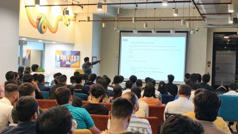
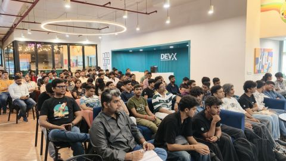

Spent my Saturday with a room full of people building some really cool stuff 😊
Ashmita Pandey · · Speaking · Community · AI
Spent my Saturday with a room full of people building some really cool stuff 😊 Had a great time attending the Agents & APIs Developer Meetup by Postman at DevX. It was great listening to Nikhilesh Tayal. His session felt a little extra special since he's from my hometown, Udaipur. Yash Jain shared some practical takeaways, and I also enjoyed hearing Indranil Chandra's perspective on AI. A special mention to Aanchal Mishra for being such a wonderful host. She kept the sessions engaging and made the whole event feel very welcoming. Big thanks to Disha Jain and Shubham Kanojiya from IndiRepair for putting together such a fantastic event. Community events like these take a lot of effort behind the scenes, and it truly showed. Really enjoyed connecting with the amazing folks from the developer community. Thank you Postman, GitHub, IndiRepair and DevX for making this happen. Looking forward to the next one! 🚀 #Postman #GitHub #DeveloperCommunity #AI #APIs #Networking #Mumbai


